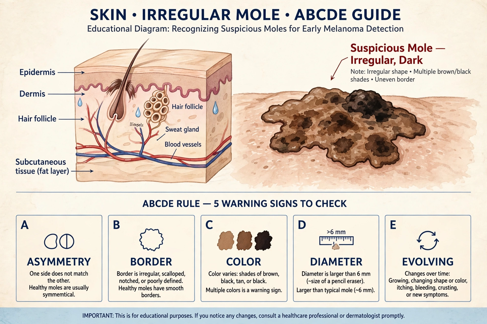

Melanoma
From Wikipedia, the free encyclopedia
Melanoma is a type of skin cancer that develops from melanocytes, the pigment-producing cells that give skin its colour and tan in response to sunlight. Although less common than other skin cancers, it accounts for most skin-cancer deaths because it readily spreads (metastasises) to other organs if not caught early.

[Image: A melanoma lesion showing asymmetry and varied colour]
Causes and warning signs
Ultraviolet radiation from sun exposure and tanning beds is the main cause; risk rises with fair skin, many or atypical moles, sunburn history (especially in childhood) and family history. Incidence has risen steeply in fair-skinned populations. Warning signs follow the ABCDE rule: Asymmetry, Border irregularity, Colour variation, Diameter over about 6 mm, and Evolving (changing) lesions.
Treatment
Early melanoma is usually cured by surgical excision with a margin of normal skin. Advanced disease was once almost untreatable, but immune checkpoint inhibitors and targeted BRAF/MEK drugs (about half of melanomas carry BRAF mutations) have markedly improved survival since the 2010s. Prevention is sun protection and avoiding tanning beds; suspicious moles warrant prompt examination and biopsy.